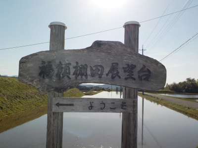
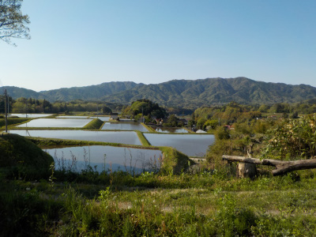
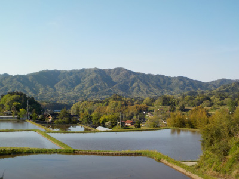
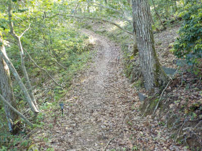
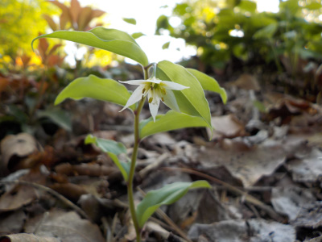
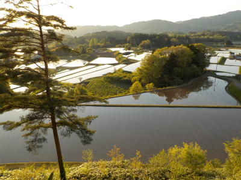
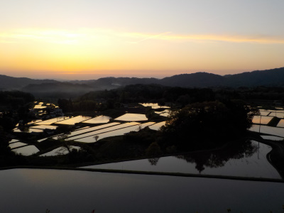
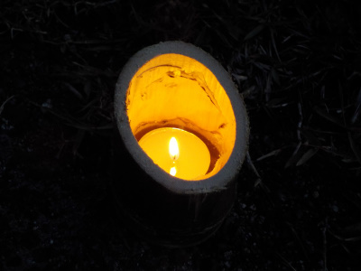

奥出雲町の福頼棚田で「奥出雲マジックアワー」イベントがありました。
2023/04/30

今日はイベントなので近くの駐車場を使わずに、福頼自治会館（島根県仁多郡奥出雲町大呂1566）に車を停めて歩いて展望台に移動です。

棚田の中の道を歩くので、いい景色が続きます。
こうゆうのは自動車の中からじゃなくて、歩きながら見るのが一番だと思いました。

ここの棚田は山を崩して砂鉄を取った跡に作られたらしいです。
そのせいかは分からないですが、田んぼが大きくて四角いです。カクカクっとスッキリしているので見ていて気持ち良かったです。

福頼棚田展望台近くは山道になります。

展望台近くにチゴユリが咲いていました。
自然の中で野生のものを見るのはいいですね。

展望台からの眺めです。視界が開けていてとてもいい眺めです。

日が沈んで雲に光が当っている写真です。マジックアワーとかブルーアワー、ブルーモーメントって言うみたいです。
私は日没前の夕焼けよりもこっちが好きだなと思いました。

道に明かりを灯して頂きありがとうございました。おにぎりと牛肉も振るまっていただきありがとうございました。
違う季節の棚田も見に行きたいと思いました。